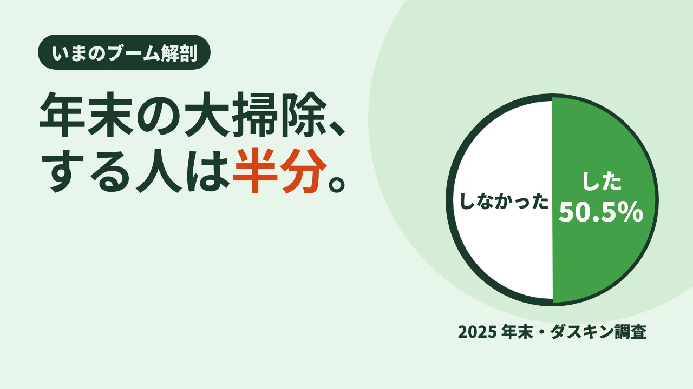

CLEAN CARE JOURNAL / いまのブーム解剖
年末の大掃除、する人は半分。
「プロに頼みたい場所」1 位はエアコン

年末の大掃除、去年はしましたか? もし「していない」なら、あなたは少数派ではありません。いま日本では、大掃除をする人としない人が、ほぼ半分ずつに分かれています。
50.5%、過去最低
ダスキンが 2026 年 10 月 22 日に発表した「2025 年末大掃除に関する意識・実態調査」(全国の 20 歳以上の男女 4,160 人、2026 年 1 月 30 日〜2 月 1 日、インターネット調査)によると、2025 年末に大掃除をした人は 50.5%。前年の 51.1% からわずかに下がり、調査を始めてからの最低を更新しました。いちばん高かったのは 2009 年末の 60.2% です。
別の調査でも、傾向は似ています。クロス・マーケティングの「大掃除に関する調査(2025 年)」(全国の 20〜69 歳 1,100 人、2025 年 11 月 28〜29 日)では、大掃除を「する」と答えた人は 71.3%。調べ方や対象の年齢、聞いた時期が違うので、数字はそろいません。クロス・マーケティングの調査では、20〜30 代に大掃除をしない人が多いとされています。
「面倒」より多かった理由
大掃除をしなかった理由で、いちばん多かったのは「面倒だから」ではありませんでした。ダスキンの調査で最多だったのは「大掃除をする習慣がない」で 26.3%。「掃除が苦手(嫌い)・面倒」の 24.7% を上回っています。
世帯によっても差があります。子育て世帯の実施率は 61.4% でいちばん高く、60 歳以上のシニア世帯は 40.6% でした。年末に家族総出で窓を拭く、という風景は、もう「どの家にもある年中行事」ではなくなりつつあるのかもしれません。
どんでん返し:年に一度だけでなく、分けて考える
では、みんな掃除をしなくなったのでしょうか。たぶん、そうではありません。同じ調査で「プロに依頼してみたい場所」を聞くと、1 位は エアコン(59.7%)でした。自分の手では届かない、分解しないと洗えない場所は、プロに任せたい。年末にまとめる以外に、季節ごとに場所を分けたり、手の届かない所はプロに任せたりする方法もあります。
12 月の寒い日に、一年分の汚れを一気に落とす。そのやり方が合わなくなっただけで、「きれいにしておきたい」という気持ちそのものが消えたわけではない。大掃除の実施率が下がっていることを、掃除の時期や、誰がやるかの分け方を考え直すきっかけにすることもできます。
結び:一年分を、一日でやらなくていい
年末の一日に全部を詰め込むと、疲れるし、寒いし、続きません。季節ごとに一か所ずつ。手の届かないところは、プロに。そう分けて考えると、「大掃除をしない」は、さぼりではなく、ひとつの選び方になります。
現場では
LOTUS クリーンケアサービスでは、エアコンや換気扇、浴室のように、分解や専用の道具が要る場所の清掃をお受けしています。介護施設の清掃では、利用者さまの食事や入浴の時間を外しながら、居室や共用部を定期で少しずつ整える考え方を大切にしています。年末は予定が立て込みやすい時期なので、場所によっては時期を分けて考えるのも一つの方法です。
今日の持ち帰り
- ダスキンの調査で、2025 年末に大掃除をした人は 50.5%(全国 20 歳以上 4,160 人)。調査開始以来の最低。
- しなかった理由の 1 位は「習慣がない」(26.3%)。プロに頼みたい場所の 1 位はエアコン(59.7%)。
- 年末に一度でまとめなくてもいい。季節で分け、手の届かない所はプロに任せる方法もある。
出典:ダスキン「2025 年末大掃除に関する意識・実態調査」(PR TIMES、本文の数値)／マイナビニュース「年末の大掃除、実施率は過去最低の50.5%に」(ダスキン「2025 年末大掃除に関する意識・実態調査」2026 年 10 月 22 日発表の紹介。対象・人数・時期、実施率、前年とピーク、世帯別、しなかった理由、プロに依頼したい場所)／クロス・マーケティング「大掃除に関する調査(2025 年)」(2025 年 12 月 3 日発表。対象・人数・時期、する人 71.3%、20〜30 代はしない人が多い)。2026 年 11 月 11 日閲覧。調査ごとに対象と聞き方が違うため、数字は単純に比べられません。